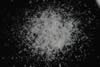

|
|
(For further information on spectroscopy, see:
http://speclab.cr.usgs.gov)
TITLE: Ammonio-Illite/Smectite GDS87 DESCRIPT
DOCUMENTATION_FORMAT: MINERAL
SAMPLE_ID: GDS87
MINERAL_TYPE: Phyllosilicate
MINERAL: Ammonium_Illite/Smectite (Synthetic)
FORMULA: NH4Al2(Si3Al)O10(OH)2 + (NH4)0.33(Al,Mg)2Si4O10(OH)2*nH2O
FORMULA_HTML: NH4Al2(Si3Al)O10(OH)2 + (NH4)0.33(Al,Mg)2Si4O10(OH)2•nH2O
COLLECTION_LOCALITY: Synthetic
ORIGINAL_DONOR: Dennis Krohn, USGS Reston
CURRENT_SAMPLE_LOCATION: USGS Denver Spectroscopy Laboratory
ULTIMATE_SAMPLE_LOCATION: USGS Denver Spectroscopy Laboratory
SAMPLE_DESCRIPTION:
IMAGE_OF_SAMPLE:

END_SAMPLE_DESCRIPTION.
XRD_ANALYSIS:
40 kV - 30 mA, 6.5-9.5 keV
File: amilsm87_mdi (smear on quartz plate)
References: Deer, Howie and Zussman (1962); Srodon and Eberl (1984); PDF2 #29-1496
Found: Rectorite and/or illite
Sought: illite, mascagnite
Comment: The pattern consists of broad peaks, some having shoulders or tails
extending toward lower d-spacings. The alpha1-alpha2 reflections are not resolved.
Both rectorite (29-1495, a 1:1 regularly interstratified dioctahedral mica and
dioctahedral smectite) and 1M illite (29-1496) explain most features of the
pattern. Neither has a basal reflection exactly in the observed position, 11.0
Angstroms. Weak but sharp and symmetric reflections at 6.10 and 5.45 Angstroms are
not identified; in a subsequent bulk mount, the intensity at 5.45 Angstroms was
greatly enhanced and that at 6.10 Angstroms greatly reduced. Glycolation of the
bulk mount so reduced all intensities that the pattern was useless.
END_XRD_ANALYSIS.
COMPOSITIONAL_ANALYSIS_TYPE: None # XRF, EM(WDS), ICP(Trace), WChem
COMPOSITION_TRACE: None
COMPOSITION_DISCUSSION:
END_COMPOSITION_DISCUSSION.
MICROSCOPIC_EXAMINATION:
END_MICROSCOPIC_EXAMINATION.
SPECTROSCOPIC_DISCUSSION:
END_SPECTROSCOPIC_DISCUSSION.
SPECTRAL_PURITY: 1b2b3b4_ # 1= 0.2-3, 2= 1.5-6, 3= 6-25, 4= 20-150 microns
| LIB_SPECTRA_HED: | where | Wave Range | Av_Rs_Pwr | Comment |
|---|---|---|---|---|
| LIB_SPECTRA: | splib04a r 301 | 0.2-3.0µm | 200 | g.s.= 125 µm |
| LIB_SPECTRA: | splib05a r 841 | 0.2-3.0µm | 200 | g.s.= |
| LIB_SPECTRA: | splib06a r 1757 | g.s.= | ||
| LIB_SPECTRA: | splib06a r 1769 | g.s.= |
{kind=link}